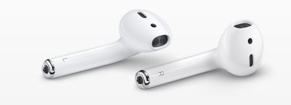
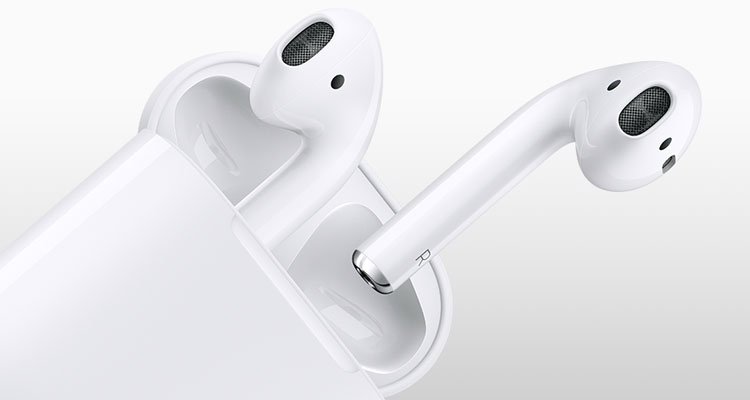

LA MEJOR PAGINA DE TECNOLOGIA |
||||
|---|---|---|---|---|
| INICIO/NOTICIAS | MOVILES | TABLETS | WEAREABLES | ACCESORIOS |
| Redes sociales |


|
| REGISTRO |
LA MEJOR PAGINA DE TECNOLOGIA |
||||
|---|---|---|---|---|
| INICIO/NOTICIAS | MOVILES | TABLETS | WEAREABLES | ACCESORIOS |
| Redes sociales |
|
|
| REGISTRO |
Parece que tendremos la segunda generación AirPods de Apple en 2019, pero bajo un diseño continuista y con mejoras más que novedades de peso. Según un analista habrá que esperar al 2020 para que Apple lance un nuevo modelo que tenga un diseño diferente al de los AirPods actuales, que experimentarán un gran crecimiento en ventas. Estrenados hace exactamente dos años, en diciembre de 2016, los AirPods fueron la respuesta de Apple al tema de los auriculares inteligentes e inalámbricos, lanzando al mercado unos cascos de diseño rompedor y sin ningún tipo de cable que además funcionaban con una batería que se recarga dentro de la misma base en la que los guardamos al no usarlos. Por descontado, ese diseño se convirtió en lo más imitado por la competencia -igual que el notch del iPhone X-, el mismo que seguiremos viendo hasta 2020 según los expertos del sector. El analista, que augura que los AirPods serán el próximo producto Apple en experimentar un enorme crecimiento a corto plazo, señala que de los 16 millones de AirPods vendidos en 2017 la cifra aumentará a los 100 millones en 2021, convirtiéndose en ese año “en el accesorio más popular de Apple. De hecho, Kuo indica que los usuarios de iPhone actuales van a estar más inclinados a comprar unos AirPods que a actualizar su iPhone. Aunque el dato más interesante que brinda el analista es que en 2020 tendremos la supuesta 3ª generación de AirPods, que vendrá con un “rediseño completo“, y que cambiarán el aspecto que tienen ahora y tendrán en 2019. Por desgracia no dice más sobre ellos, aunque algunos rumores han sugerido que los AirPods 2020 vendrán con resistencia al sudor, integración con el comando Hey Siri y demás. ¿Tendrá razón el analista en su nuevo informe?

Teniendo en cuenta que en este 2018 hacían dos años ya en el mercado, y dado el ritmo de lanzamientos anuales que suele tener Apple con sus dispositivos, nos hemos pasado todo el año imaginando / prediciendo que íbamos a ver los AirPods de 2ª Generación en alguno de los eventos importantes que Apple ha celebrado este año. Pero no, pasó la WWDC, la Keynote de septiembre, y nada. Los AirPods 2 (y el AirPower) eran siempre un no show, aunque todos los rumores e informaciones apuntan a que se convertirán en productos anuales a partir del próximo año.


| MAS VENDIDOS | ||
|---|---|---|
| Nº | Dispositivo | Precio |
| 1 | Iphone X | 1150€ |
| 2 | Samsung Galaxy s9 | 749€ |
| 3 | Ipad 2018 | 439€ |
| 4 | Huawei Watch 2 | 285€ |